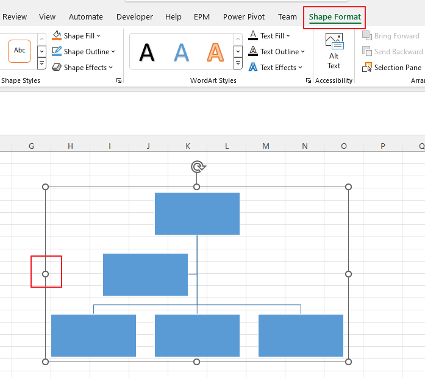
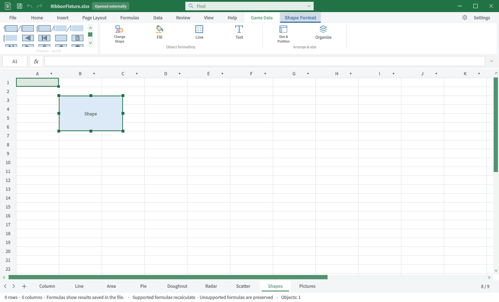
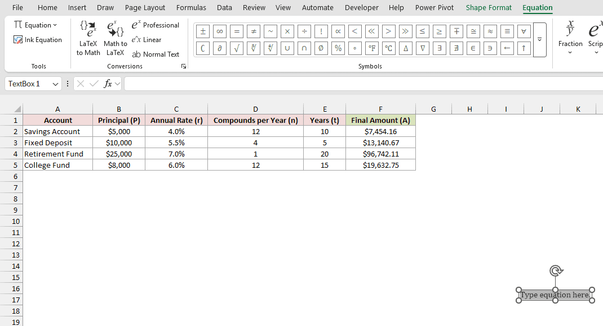
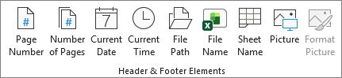
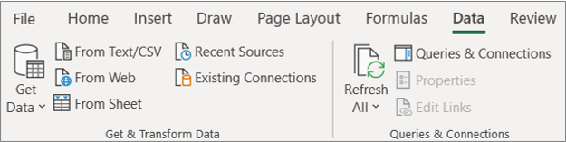
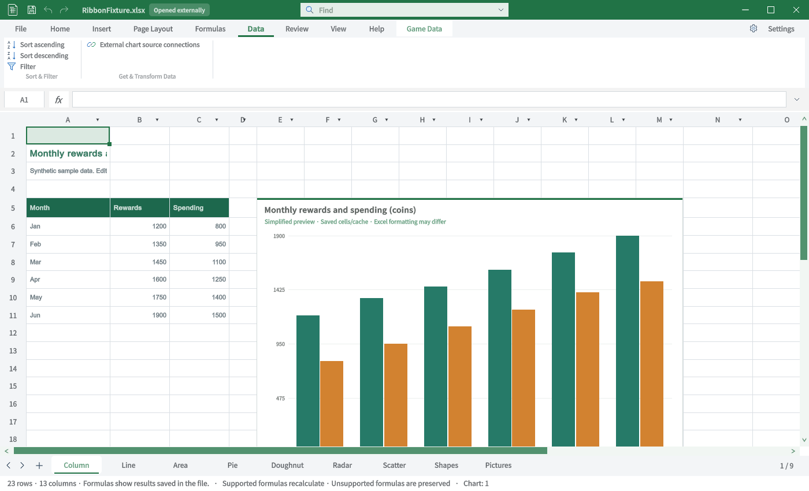

Tracefolio REPORTS & ISSUES
Tracefolio REPORTS & ISSUESExcel ↔ TurnRoom 탭별 TC · 특수탭 3
부분 완료TC-RIB-28–TC-RIB-33: 원본과 실제 Unity 캡처, 절차·기대·실제·재QA를 구분합니다.
작업 결과
6개 탭의 비교 TC입니다. 전체 Excel 동등성 통과 보고가 아닙니다.
변경 내용
적용 내용
TC-RIB-28 · SmartArt 서식 — 비교자료 부족
| 항목 | 내용 |
|---|---|
| 실행 절차 | SmartArt 관련 서식 경로를 확인합니다. |
| 기대 동작 | 관련 개체의 서식·스타일을 제공합니다. |
| 실제 결과 | 현재 일반 도형 서식만 있습니다. 원본도 Shape Format으로 표시되므로 별도 SmartArt Format 탭 존재 근거로 쓰지 않습니다. |
| 재QA·수정 필요 | Excel 버전별 서식 탭 관계 확인·SmartArt 기능 미구현. |
TC-RIB-29 · 그래픽 서식 — 기능 미구현
| 항목 | 내용 |
|---|---|
| 실행 절차 | 관련 개체 삽입·선택 경로를 확인합니다. |
| 기대 동작 | SVG 선택 시 그래픽 서식 |
| 실제 결과 | 기존 자료525942316d775e.png는 Word 화면이므로 Excel 대조 원본에서 제외. 현재 해당 개체 편집·탭 진입점이 없습니다. |
| 재QA·수정 필요 | 해당 Excel 원본 확보·기능 미구현. |
TC-RIB-30 · 3D 모델 서식 — 기능 미구현
| 항목 | 내용 |
|---|---|
| 실행 절차 | 관련 개체 삽입·선택 경로를 확인합니다. |
| 기대 동작 | 3D 모델 선택 시 보기·정렬 |
| 실제 결과 | 기존 자료185bd57246926c.png는 PowerPoint 화면이므로 Excel 대조 원본에서 제외. 현재 해당 개체 편집·탭 진입점이 없습니다. |
| 재QA·수정 필요 | 해당 Excel 원본 확보·기능 미구현. |
TC-RIB-31 · 수식 디자인 — 기능 미구현
| 항목 | 내용 |
|---|---|
| 실행 절차 | 관련 개체 삽입·선택 경로를 확인합니다. |
| 기대 동작 | 수식 개체 선택 시 디자인 |
| 실제 결과 | 원본 Equation 탭과 실제 Excel 개체 화면 확보. 현재는 Equation 삽입·전용 탭이 없습니다. |
| 재QA·수정 필요 | 수식 개체 편집·전용 탭 미구현. |
TC-RIB-32 · 머리글·바닥글 — 기능 미구현
| 항목 | 내용 |
|---|---|
| 실행 절차 | 머리글·바닥글 전용 편집 경로를 확인합니다. |
| 기대 동작 | 페이지 번호·날짜·파일명 등의 요소를 비교합니다. |
| 실제 결과 | 현재 리본에는 전용 탭이 없습니다. 페이지 설정 내부 저장 기능과 전용 탭 제공을 구분합니다. |
| 재QA·수정 필요 | 전용 편집 탭·직접 선택 실행 미구현. |
TC-RIB-33 · 쿼리 편집 — 기능 미구현
| 항목 | 내용 |
|---|---|
| 실행 절차 | 쿼리 개체의 전용 편집 진입을 확인합니다. |
| 기대 동작 | 쿼리 선택·편집 탭을 제공합니다. |
| 실제 결과 | 현재 외부 차트 소스 연결만 표시합니다. 원본은 데이터 가져오기 그룹이며 Query 전용 탭 원본이 아닙니다. |
| 재QA·수정 필요 | Query 전용 원본 확보·기능 미구현. |
검증
Unity6000.0.83f1 / Windows / 영어 / 실제 Editor GUIView Direct3D11 캡처입니다. 별도 QA 프로젝트에서 실행했으며 모형·AI 이미지는 사용하지 않았습니다. Excel은 출처의 게시 원본이며 이 PC에서 직접 촬영한 화면이 아닙니다.
TC-RIB-28 · 사진 대조
| Excel 원본 | TurnRoom 현재 |
|---|---|
 |
 |
원본 범위: SmartArt 파생 개체의 Shape Format. 원본 출처
TC-RIB-29 · 사진 대조
| Excel 원본 | TurnRoom 현재 |
|---|---|
| 해당 Excel 원본 미확보 · 사진 대조 미실행 |  |
원본 범위: Excel 원본 미확보.
TC-RIB-30 · 사진 대조
| Excel 원본 | TurnRoom 현재 |
|---|---|
| 해당 Excel 원본 미확보 · 사진 대조 미실행 | |
원본 범위: Excel 원본 미확보.
TC-RIB-31 · 사진 대조
| Excel 원본 | TurnRoom 현재 |
|---|---|
 |
|
원본 범위: SpreadsheetPlanet 직접 작성 Excel Microsoft365 Windows 원본. 원본 출처
TC-RIB-32 · 사진 대조
| Excel 원본 | TurnRoom 현재 |
|---|---|
 |
원본 범위: Header/Footer Elements 부분 원본. 원본 출처
TC-RIB-33 · 사진 대조
| Excel 원본 | TurnRoom 현재 |
|---|---|
 |
 |
원본 범위: Data Get & Transform 부분 자료. 원본 출처
남은 사항
명령 전체를 클릭·저장·재열기한 전수 동작 QA는 아닙니다. 화면 표시와 기능 실행 판정을 분리했습니다. 없는 기능은 미구현으로 기록했고 차단으로 바꾸지 않았습니다.
로컬 Excel 실행경로를 확보하지 못해 동일 빌드의 원본 직접 촬영은 미실행입니다. 일부 참조는 구형 Windows 또는 Excel 웹의 부분 화면입니다. 제품 저장소 커밋·푸시는 미실행입니다.
교훈: 원본의 실제 제품·탭을 확인하고 부분 자료를 전체 대조로 계산하지 않습니다. 기존 전역 지침 범위이므로 전역 변경 없음.
작업 시간
- 제안 시간: 최초15–25분. 전체 탭 비교 요청 추가 후35–50분 예상.
- 실제로 완료된 시간: 2026-10-31 22:49:21 KST 시작. 최신 캡처23:14:04 KST 완료, 이 문서 작성23:23 KST. 기능 전체 완료 시각이 아닙니다.
- XERJ: 사용 — XERJ ContextualTabs 검색 후 현재 소스·원본 ZIP·Unity 실행과 대조